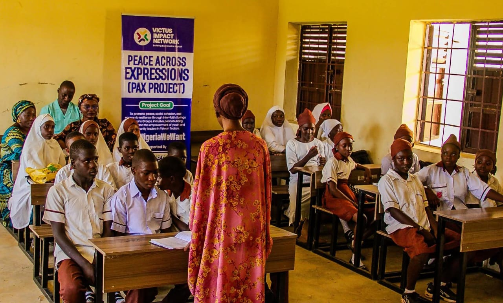
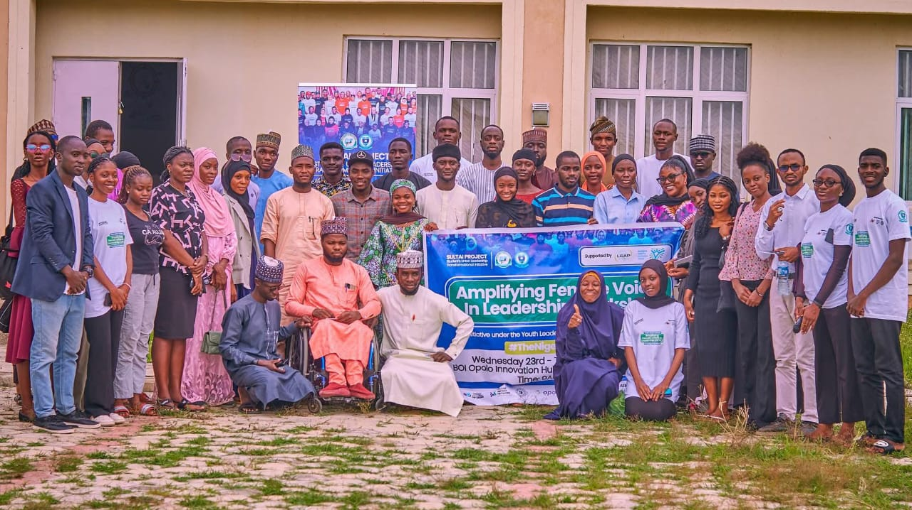
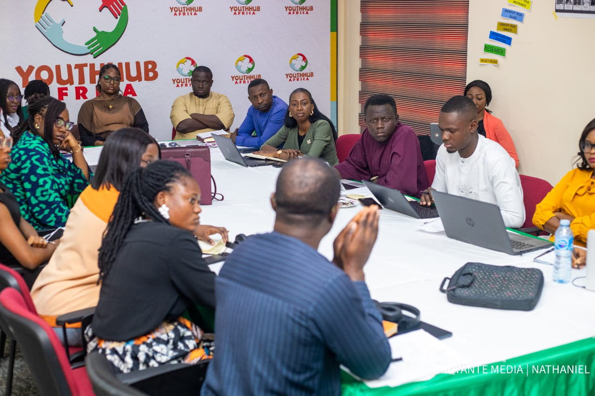
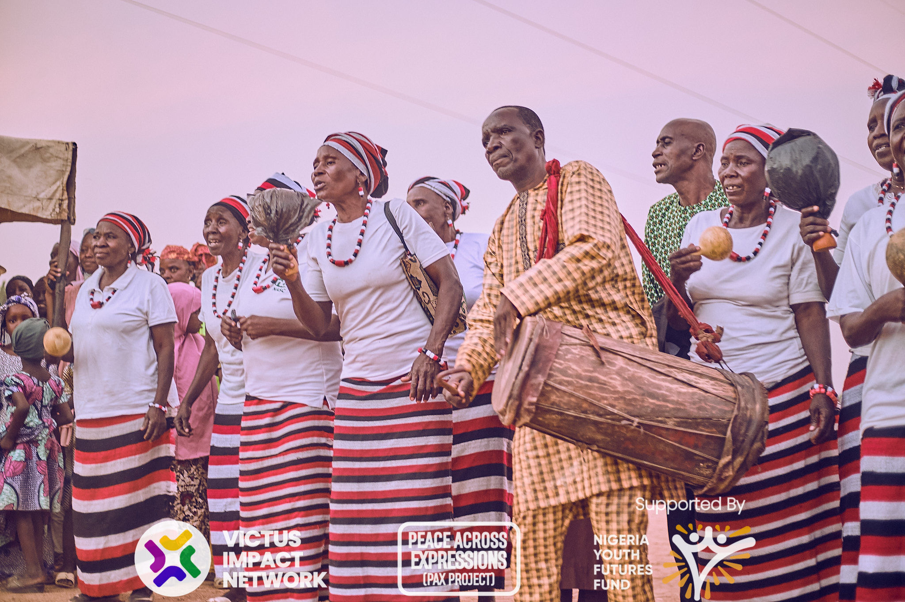

Education
Improving access to quality education, leadership development, digital literacy and lifelong learning.

Governance
Promoting transparency, good governance, civic participation and policy engagement.

Peace Building
Strengthening peaceful communities through dialogue, conflict prevention and mediation.

Gender Equality
Supporting women and girls through leadership, advocacy and equal opportunities.

Youth Empowerment
Developing young leaders through skills acquisition, innovation and entrepreneurship.

Community Development
Working with local communities to build sustainable social and economic development.